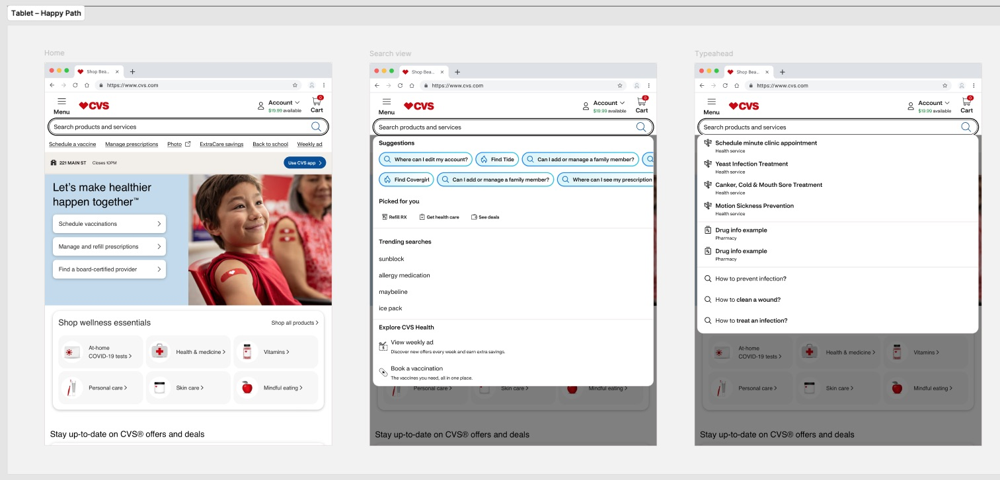
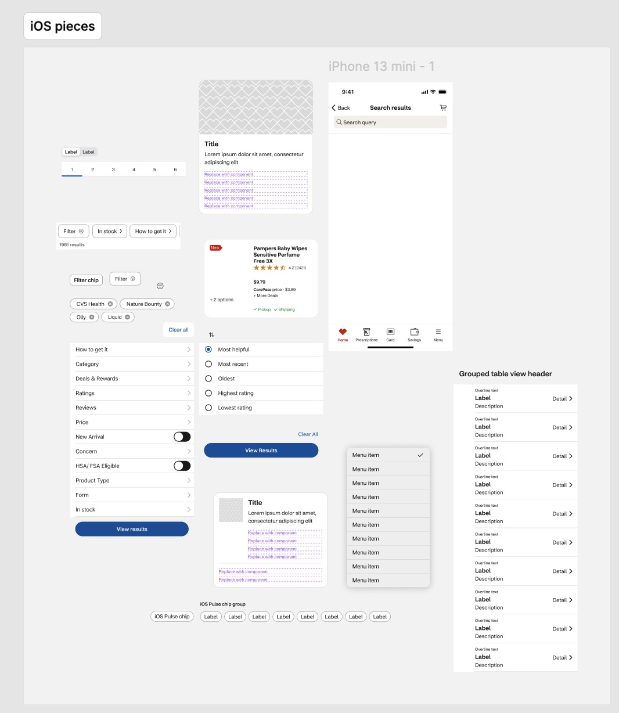
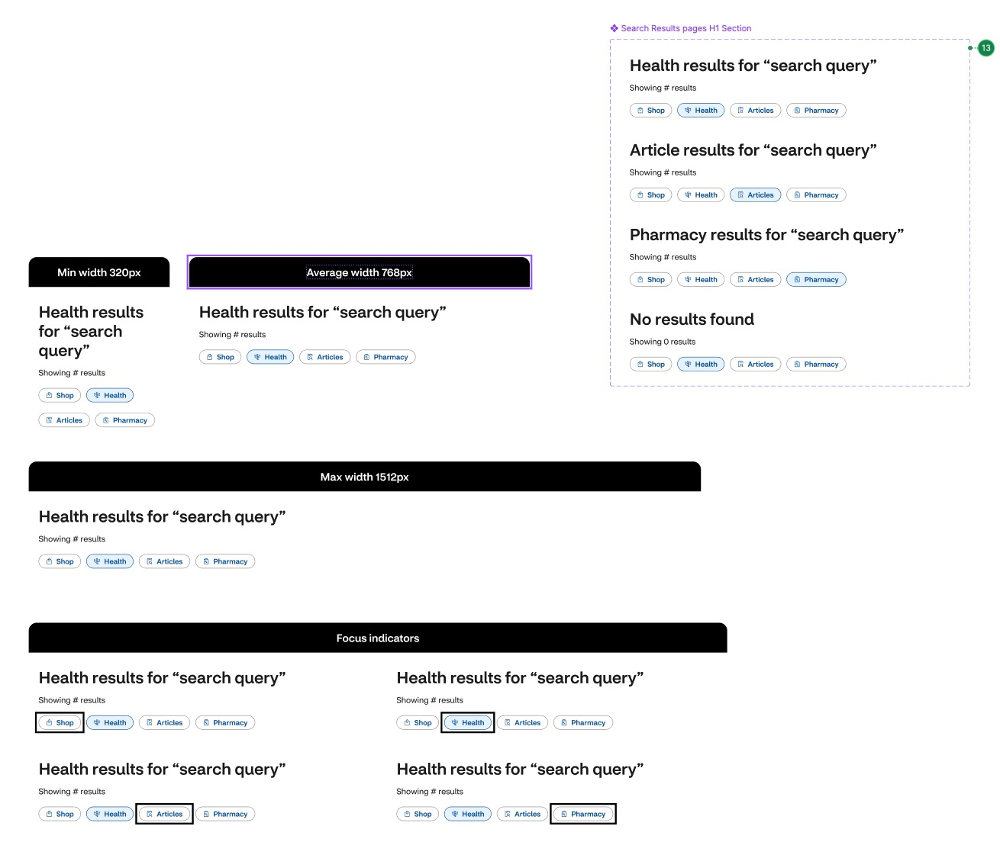
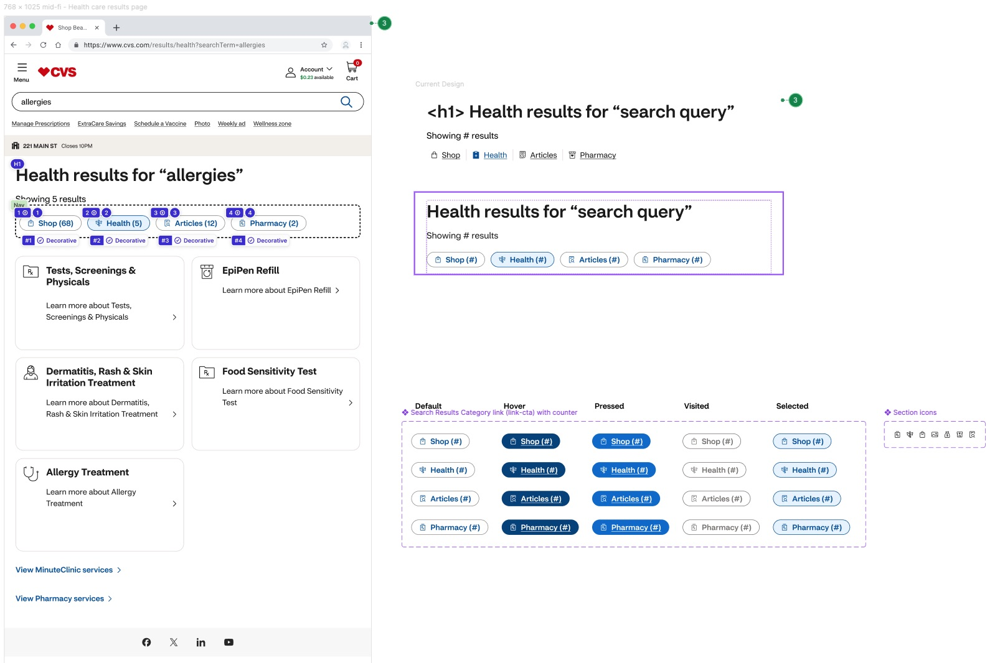
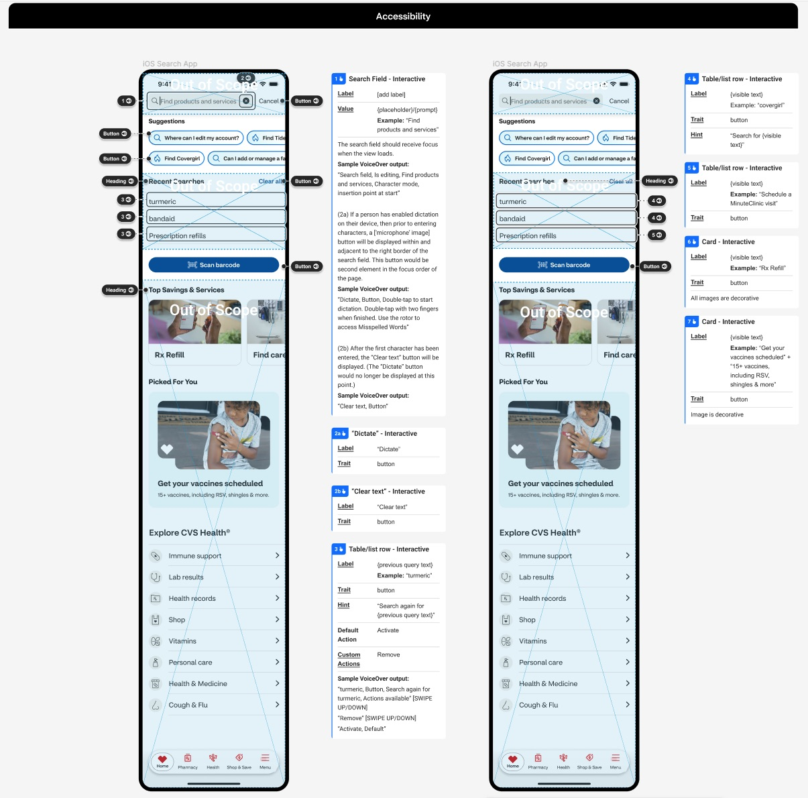
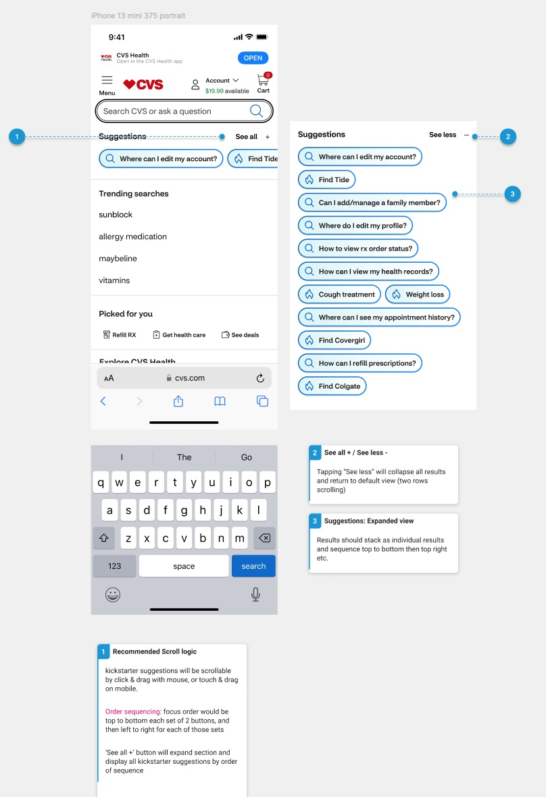
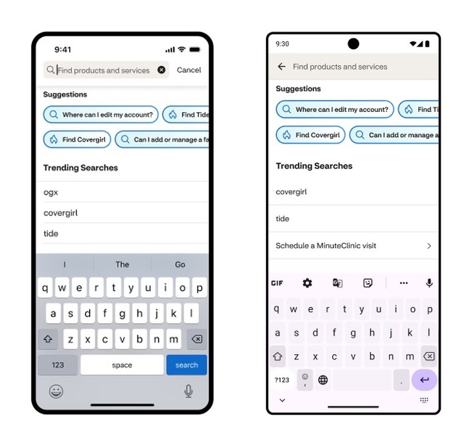

Unifying search across CVS Health's MinuteClinic, Pharmacy, Drug, and Retail experiences — one enterprise-wide result screen designed to stay accurate, accessible, and honest about what it's showing.

MinuteClinic, Pharmacy, Drug information, and Retail Products had each grown their own standalone search inside their own CVS Health apps, with their own logic for ranking, presenting, and labeling results. A single query — a symptom, a drug name, a product — could mean something different depending on which app it was typed into, and there was no enterprise-wide experience that considered a user who needed more than one of those business units at once. The ask was to consolidate all four into a single, unified search experience.
Rather than four separate result screens, the solution centers on one new, configurable search results template that every business unit plugs into — giving CVS Health a single pattern to maintain and extend as new lines of business come online, instead of four (or more) to keep in sync.

The components had to hold up for two very different searches: someone looking for one specific thing tied to a single business unit — a specific drug name — and someone with a broader, health-oriented query that legitimately spans multiple business units at once. The template flexes between a focused, single-source result and a multi-source result without asking the user to know in advance which kind of search they're doing.

When a query does span multiple business units, results stay grouped in clearly labeled buckets by BU rather than being ranked into one intermingled list — so a Pharmacy result never reads as a MinuteClinic result, and users can tell at a glance where each answer is coming from.

Content guidelines were built into the template itself, so language never implies medical treatment for a non-medical search — a Retail Product result doesn't read like clinical advice. In parallel, every native and pulse component was specced against accessibility (A11y) standards, so results remain fully navigable and understandable regardless of how they're prioritized or reordered on the page.

Beyond the results page, I designed ways to help people get to an answer before they finish typing. “Kickstarter” suggestions — an animated list of prompts, inspired by patterns from apps like Meta’s — sit at the top of the search view and are controlled by the business, so they can follow whatever the company is focused on that season.
“Discover” suggestions in typeahead surface common account questions — “Where do I view my order history?” — so people can help themselves instead of calling in.

Once live, the unified search changed how people found answers. Results were finally accurate and clearly bucketed by business unit, so fewer people had to call in for something search should have surfaced.
A year of refinement, plus new “Discover” suggestions, took search past its call-center goal: it now covers 77% of the top reasons people call, against a 70% target. When “Discover” launched on web, coverage of the top call-center reasons rose from 53% to 67%. [Ari: confirm which engagement and call-center numbers to feature — résumé says +15% / +25% / −10%; internal report shows 53% → 77% coverage]

Placeholder: something like — designing one configurable template for four business units meant negotiating shared rules (like bucketing and content tone) that no single BU owned on its own.
Placeholder: something like — treating accessibility and content language as core requirements, not QA checklist items, changed how early in the process those decisions had to be made.